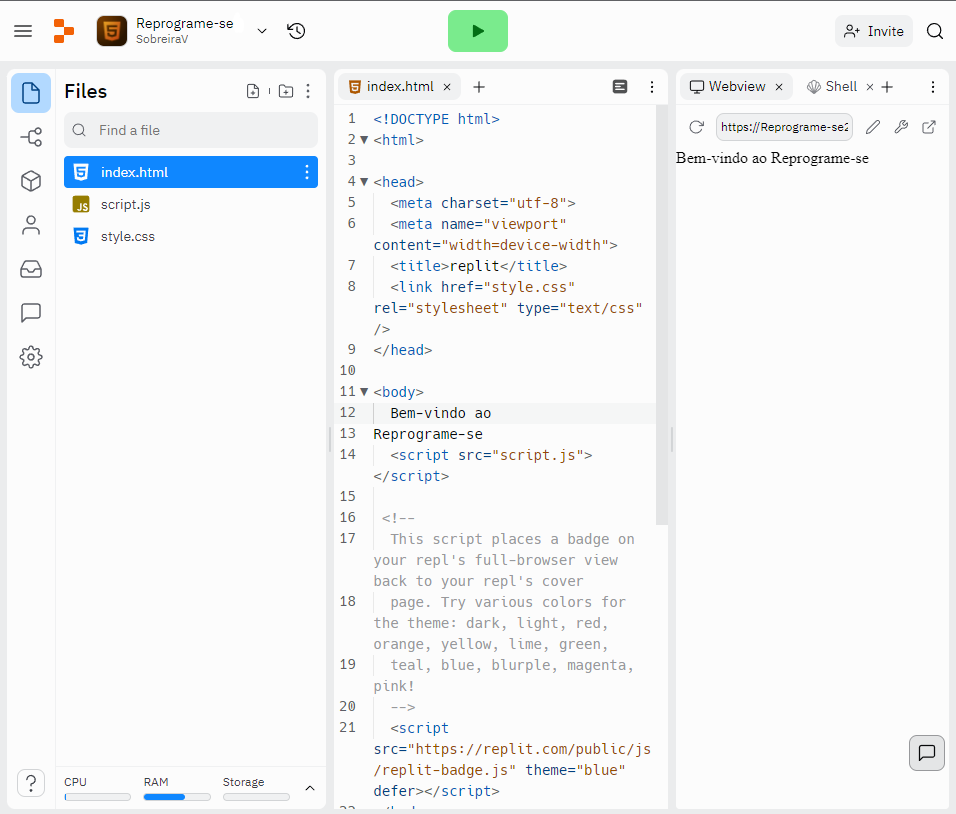

Objetivo: Criar um projeto chamado "Reprograme-se", alterar o texto "Hello world" para "Bem-vindo ao Reprograme-se" e executar para ver o output.
Objetivo: Conhecer editores de código alternativos.
Continuarei a utilizar o Visual Studio Code como editor principal, mas são alternativas interessantes.
Objetivo: Conhecer atalhos de teclado para o Visual Studio Code. Arquivo PDF com atalhos